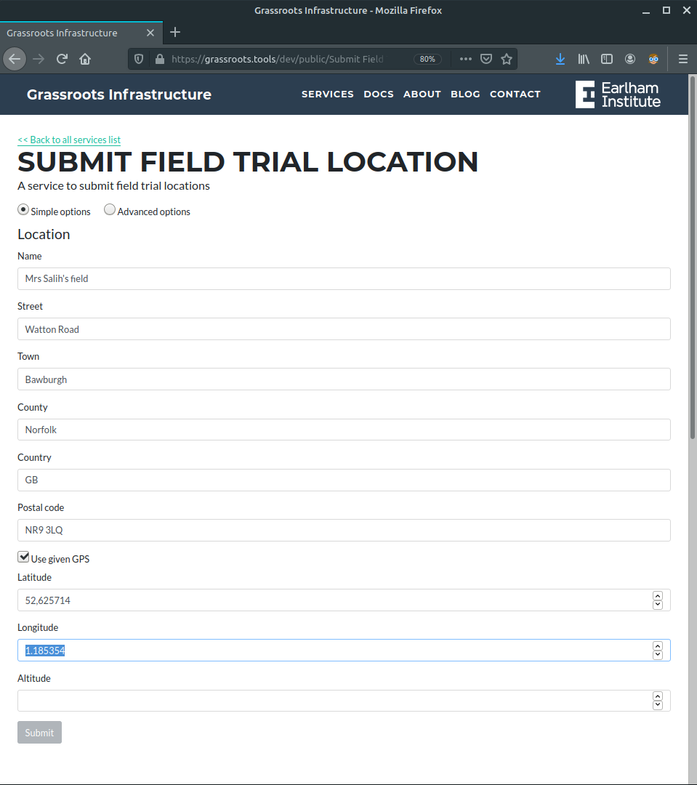

Location
URL: https://grassroots.tools/private/service/field_trial-submit_location
A Location defines the geographical location of the field where a Study takes place.The location can be defined by a normal postal address or GPS coordinates. The Grassroots system has libraries for determining GPS coordinates from any address data that is submitted, although the accuracy will depend upon how much data is given. You can alter the GPS coordinates and altitude of the location yourself should the information that is discovered automatically is not correct or not accurate.
The pieces of information that you can enter are:
- Name*: The name of this Location. This is a required field.
- Street: The street for this Location.
- Town: The town for this Location.
- County: The county for this Location.
- Country: The country for this Location.
- Postal code: The town for this Location.
- Use given GPS: Tick this box if you wish to override the GPS coordinates
- Latitude: If Use given GPS is ticked, then this will specify the latitude of this Location in decimal degrees e.g. 41.40338
- Longitude: If Use given GPS is ticked, then this will specify the longitude of this Location in decimal degrees e.g. -12.87665
- Altitude: If Use given GPS is ticked, then this will specify the altitude of this Location in metres.
